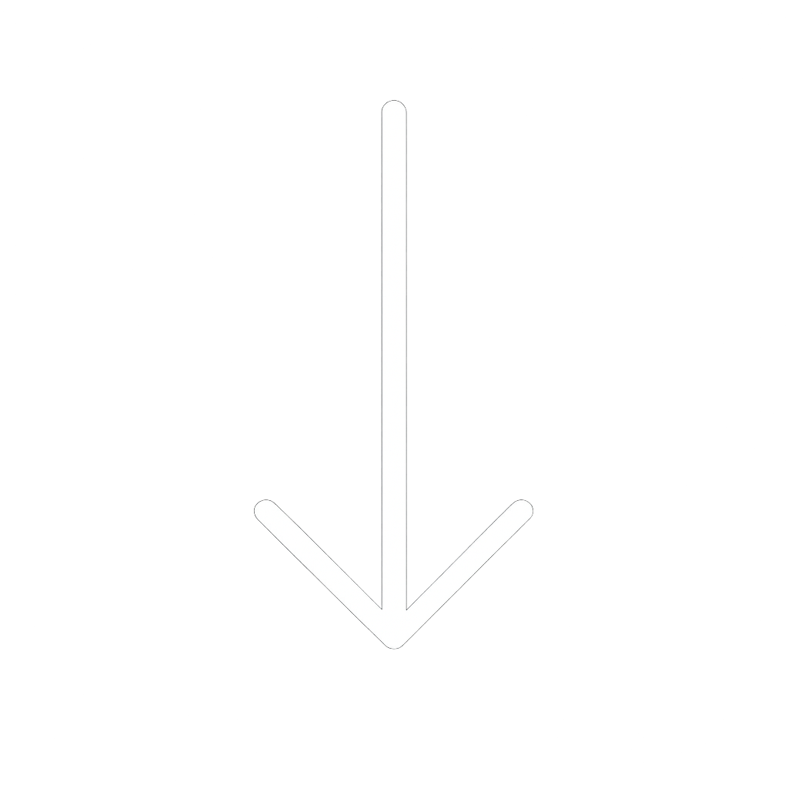

The Doll House
Interactive System



“The Doll House” was an academic group project in which we had to create an interactive embedded system using sensors and servomotors. The project has different interactions such as detecting touch with a touch sensor, changes in temperature and light, and actions when someone presses a button. During this project, I was the lead programmer and circuit developer.
The touch sensor functions with the servomotor. I coded the sensor to make the servomotor move the door at 45 degrees when the sensor is being touched. The door will remain open until the user releases the touch sensor, then the servomotor will move to the original position.


The circuit includes the Arduino, touch sensor, light sensor, temperature sensor, breadboard, and three buttons. I connected every element making sure they were working properly.